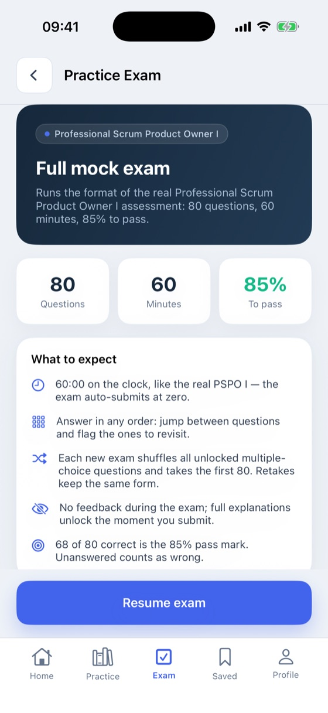
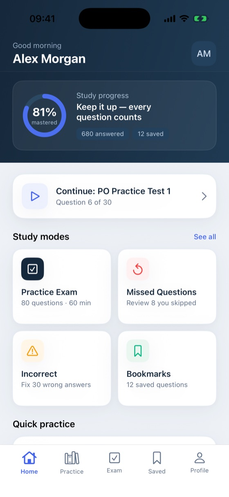
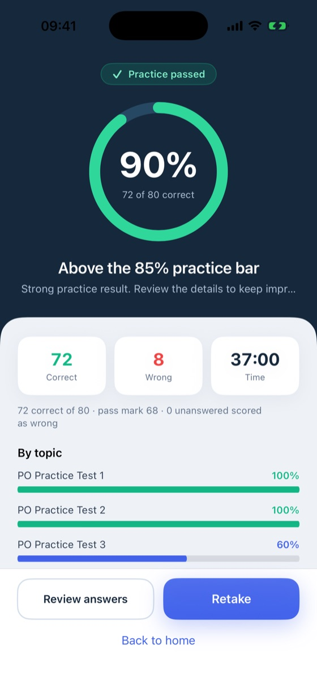

Full mock examsĐề thi thử đầy đủ
Practice the 80-question, 60-minute format with a live timer, free navigation, and flags for review.Luyện định dạng 80 câu trong 60 phút với đồng hồ thật, chuyển câu linh hoạt và đánh dấu để xem lại.
Professional Scrum Product Owner IProfessional Scrum Product Owner I
Build confidence for PSPO I with focused practice, realistic timed mock exams, quick challenges, and review tools that keep every study session on track.
Tự tin chinh phục PSPO I với luyện tập trọng tâm, đề thi có giờ, thử thách nhanh và công cụ ôn tập giúp mỗi phiên học đi đúng hướng.
Built for iPhone and iPad · English and Vietnamese · Progress stays on your deviceDành cho iPhone và iPad · Tiếng Anh và tiếng Việt · Tiến độ lưu trên thiết bị


Everything you need to improve
Move from focused topic practice to exam-day simulation, then use clear results to decide exactly what to review next.
Đủ công cụ để tiến bộ
Đi từ luyện theo chủ đề đến mô phỏng ngày thi, rồi dùng kết quả rõ ràng để biết chính xác nội dung cần ôn tiếp theo.
Practice the 80-question, 60-minute format with a live timer, free navigation, and flags for review.Luyện định dạng 80 câu trong 60 phút với đồng hồ thật, chuyển câu linh hoạt và đánh dấu để xem lại.
Work through topics, explanations, bookmarked questions, missed items, and incorrect answers.Học theo chủ đề, xem lời giải, câu đã lưu, câu bỏ qua và các đáp án chưa đúng.
Track answered questions, completed attempts, best score, readiness, and performance by topic.Theo dõi số câu đã học, lượt hoàn thành, điểm cao nhất, mức sẵn sàng và kết quả theo chủ đề.
Use Flash Challenge and Time Trial when you want a shorter, high-intensity practice session.Dùng Flash Challenge và Time Trial khi bạn muốn một phiên luyện ngắn nhưng tập trung cao.
Try 30 questions first. A single lifetime Premium purchase unlocks the complete 800-question bank and modes.Thử trước 30 câu. Một lần mua Premium trọn đời mở khóa đủ 800 câu hỏi và các chế độ luyện.
Your learner name, answers, scores, drafts, bookmarks, and study preferences stay on your device.Tên người học, đáp án, điểm số, bài nháp, câu đã lưu và tùy chọn học tập ở lại trên thiết bị.
Designed for momentum
A calm interface keeps the question, time, and next action clear—without distracting you from learning.
Thiết kế để duy trì đà học
Giao diện rõ ràng giữ câu hỏi, thời gian và bước tiếp theo luôn dễ thấy, không làm bạn phân tâm khỏi việc học.

Need help with purchases, restores, reminders, or your local study data? The support page has quick answers and direct contact.
Cần trợ giúp về mua hàng, khôi phục, nhắc lịch hoặc dữ liệu học trên máy? Trang hỗ trợ có câu trả lời nhanh và kênh liên hệ trực tiếp.